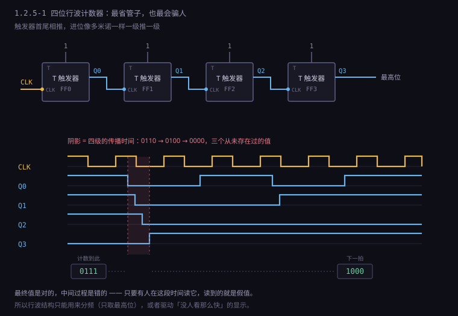
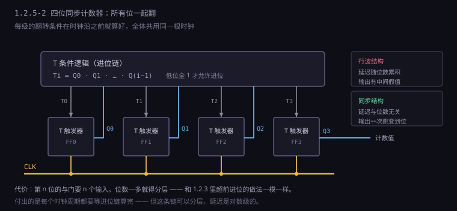
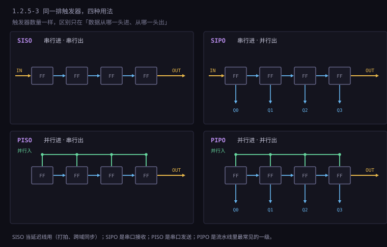
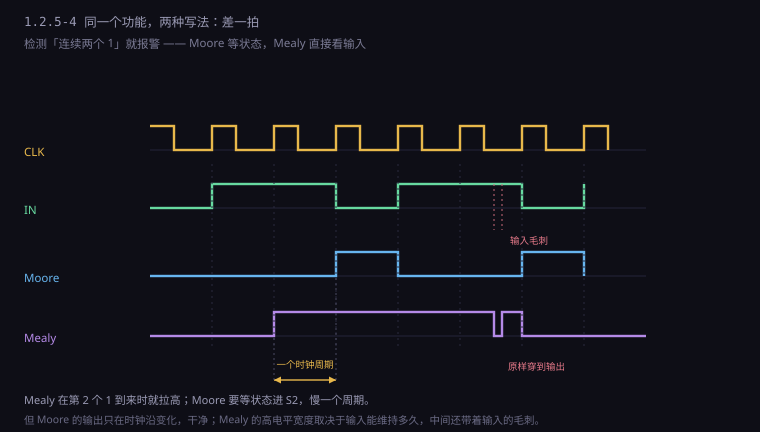
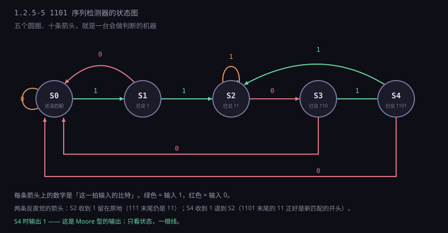
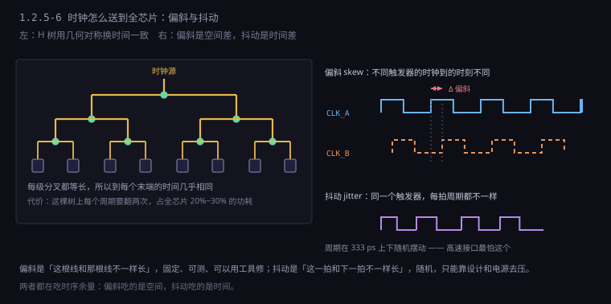

约 1.3 万字 · 6 张图 · 读完你能说清为什么整台机器必须共用一根节拍、 看懂计数器、状态机、流水线其实是同一种东西、并且明白 「时序收敛」这四个字为什么值几千万
一个 D 触发器能记住一个比特，但它记的是「你给它的那个值」。 如果你把它的反向输出接回自己的输入，会发生什么？ 每个时钟沿到来时，它读到的都是自己上一拍的反面，于是它翻转。 这一招叫 T 触发器（toggle，翻转）， 它只有一个控制输入 T：T=1 时每个时钟沿翻一次，T=0 时保持不动。
拿一只 T 触发器，让它一直翻转（T 恒为 1），它的输出就是
0, 1, 0, 1, 0, 1…，频率正好是时钟的一半。
这就是一个 1 位计数器，也是一个二分频器。
现在把它和时钟的关系倒过来看：不是「时钟让它变」，而是「它在数时钟」。
每来一个沿，它数一个数，只不过它只会数 0 和 1，数到 2 就回到 0。
要数到更大的数，把几只这样的触发器摞起来。二进制计数的规则很简单： 最低位每个时钟都翻；某一位要翻，前提是它下面所有位都是 1。 十进制里也一样——秒表的个位每 0.1 秒动一次，十位要等个位从 9 回到 0 才动， 百位要等个位和十位都是 9。 这条规则里藏着两个实现方向，它们的分岔决定了整个计数器家族的命运。
第一种想法最直接：既然「低位从 1 变 0」意味着它要进一位， 那我把低位的输出当作高位的时钟不就行了？ 低位每翻一次，就相当于给高位一个沿；低位从 1 掉到 0 的那一次， 正好是高位该翻的时候。 这就是行波计数器（ripple counter），也叫异步计数器—— 因为各级的触发器并不同步，它们像多米诺骨牌一样一级推一级。
第二种想法是：所有触发器都接同一根时钟，谁也不许自己造节拍。 那某一位什么时候翻？在时钟沿到来的那一刻，看它下面所有位是不是全 1。 这个「看」用与门做，算出来的信号送进这一位的 T 端。 这就是同步计数器，所有位在同一个沿上同时决定、同时翻。
后者明显更贵——每一位都要配一个与门，位数一多，那个与门的扇入还会涨到没法做。 前者明显更省——每级只要一只触发器，一个与门都不用。 可工程上几乎所有地方用的都是后者。为什么？下一节用一张波形图说明。
想象一个 4 位行波计数器，当前值是 0111，下一个时钟沿到来。
按二进制的规则，它应该变成 1000：四位全变。
但在行波结构里，这四位不是同时变的，而是一个接一个地变。
时刻 t0： Q3 Q2 Q1 Q0 = 0 1 1 1 ← 时钟沿刚来，第 0 位先翻
时刻 t1： 0 1 1 0 ← 第 0 位翻完，它从 1 掉到 0，触发第 1 位
时刻 t2： 0 1 0 0 ← 第 1 位翻完，触发第 2 位
时刻 t3： 0 0 0 0 ← 第 2 位翻完，触发第 3 位
时刻 t4： 1 0 0 0 ← 第 3 位翻完，终于到位
在 t0 到 t4 这段时间里，输出端口上的值依次是
0111 → 0110 → 0100 → 0000 → 1000。
中间那三个值是从未存在过的假值——它们不在计数序列里，
是电路在过渡过程中的瞬时状态。如果这时候有人去读这个计数器，
他读到的可能是一个和真值差得很远的数。
这比上一节讲的毛刺严重得多。毛刺只有一两个门延迟宽， 而行波计数器的过渡时间等于位数乘以单级触发器延迟。 8 位计数器在 01111111 变 10000000 的那一拍，要连续传播七级； 如果单级延迟是 5 纳秒（老式 4000 系列 CMOS 的水平）， 那就有 35 纳秒的时间里，输出是一串乱七八糟的假值。

那行波计数器还有用吗？有，而且用处不小——只要你不去读它的中间过程。
用途一：分频。 只取最高位，那一级的输出是干净的方波，频率精确等于时钟除以 2n。 因为最高位每个周期只翻一次，而且一定是在所有低位都归零之后才翻， 它自己的波形里没有假值。老式电子钟、定时插座里的分频链就是这么做的： 32.768 kHz 晶振经过十五级二分频，得到 1 Hz。
用途二：驱动不要求实时的显示。 二十世纪的数字频率计、跑表，用 74LS93 这类行波计数器计数， 输出经过七段译码后直接点亮数码管。 数码管有毫秒级的余辉，人眼有几十毫秒的视觉暂留， 那几十纳秒的假值根本来不及被看见。 不是电路对了，是没人看那么快。
但只要输出要送进另一片数字电路——比如送进一个比较器、一个寄存器、 一条总线——行波计数器就立刻变成灾难。 因为下游电路会在自己的时钟沿上采样，它采到哪一刻的值完全随机， 可能刚好采到中间那个 0000。这种 bug 极难查： 它在实验室里可能跑一万次都对，因为温度、电压决定了那几纳秒的窗口 恰好错开了采样时刻；一上量产，某批芯片就整片整片地错。
同步计数器的做法是把「什么时候翻」这件事，在时钟沿之前就算好。 每一级的 T 输入接一个与门，与门的输入是它下面所有位的当前值：
T0 = 1
T1 = Q0
T2 = Q0 · Q1
T3 = Q0 · Q1 · Q2
…
Tn = Q0 · Q1 · … · Q(n-1)含义很直白：第 n 位要翻，前提是它下面的 n 位全是 1—— 也就是「低位全部满格，该进位了」。 这些与门的输入在时钟沿之前就已经稳定（它们是上一拍的结果）， 所以时钟沿一到，所有该翻的位同时翻，该保持的同时保持。 输出端口上永远不会出现中间假值，因为从 0111 到 1000 是一次跳变， 没有中间态。

代价立刻显形。第 31 位的与门要接 31 个输入。 这在 CMOS 里不是不能做，而是很慢——一个 31 输入的与门， 要么做成一大堆积木似的多级门（延迟叠加），要么做成一只巨大的单级门（驱动能力差、面积大）。 实际芯片里的解法，和加法器完全一样：分层。 把 32 位切成 4 组，每组内部算一个「本组是否全 1」， 组间再用这 4 个信号算出「本组该不该进位」。 这就是超前进位的思路，只不过这里进的是「计数」，不是「加法」。
还有一件事值得点破：计数器本质上就是一个「加 1 的加法器 + 一排寄存器」。 把 1.2.3 的全加器链的低位进位接成 1、把输出接回输入端的触发器， 得到的就是一个同步计数器。 所以 CPU 里的程序计数器（PC）不是什么神秘部件， 它就是一个带「加载」功能的同步计数器：平时每拍加 1， 遇到跳转指令就并行装入一个新地址。
真实的计数器芯片还会多出几只脚，每一只都对应一段逻辑：
| 输入 | 作用 | 内部怎么实现 |
|---|---|---|
| CLK | 节拍，上升沿计数 | 所有触发器的时钟端 |
| EN | 计数使能，低电平时暂停 | 与进每一位的 T 条件 |
| CLR | 清零，回到 0 | 触发器的异步复位端 |
| LOAD | 并行装入一个初值 | 每级加一个二选一（D 或 Q） |
| UP/DOWN | 加计数或减计数 | 把「下面全 1」换成「下面全 0」 |
| CO | 进位输出，级联用 | 所有位全 1 时拉高 |
这张表里的 CO（carry out）值得多看一眼。
它让多个计数器串成更宽的计数器：低 4 位的 CO 接到高 4 位的 EN，
低 4 位满格的那一拍，高 4 位才允许加一。
这种「用使能级联」而不是「用进位线级联」的做法，
保证了每一级仍然共用同一个时钟，不会退化成行波结构。
级联可以，但时钟不能级联。这是同步设计的第一条纪律。
4 位二进制计数器只有 16 个状态，从 0000 数到 1111 再回到 0000。 这叫模 16（modulo 16）。可现实里的计数很少正好是 2 的幂： 秒表要数到 60，分钟要数到 60，小时要数到 24， 洗衣机要数 45 分钟，红绿灯要数 30 秒。 怎么让一个 2 的幂的计数器，数出别的模数？
办法是提前打断：在数到目标值的那一刻，不等它自然溢出，直接清零。
模 10 计数器就是数到 1001（9）时，下一个沿把它清成 0000。
检测「到了 9」用一只与门：Q3 · Q0——只有 1001 这一个状态能让它输出 1。
这个信号接到所有触发器的复位端。
模 10 计数器的状态序列：
0000 → 0001 → 0010 → … → 1000 → 1001 ─┐
↑ │
└────────────────────────────────────┘
检测到 1001 就清零，跳过 1010~1111这个「检测 + 清零」的组合，在芯片里几乎无处不在。 定时器是一个数到某个值就翻转输出的计数器； 看门狗是一个「数到头就复位整颗芯片」的计数器； 波特率发生器是一个数到某个值就产生一个脉冲的计数器。 它们的核心都是同一句话：把时间换成一串数，然后盯着某个数。
假设你有一个 50 MHz 的时钟，想要 1 Hz 去闪一个 LED。 1 Hz 需要 50,000,000 分频，不是 2 的幂，所以不能用行波链的最后一级。 很多人的第一反应是：写一个计数器，数到 24,999,999 时把输出翻转， 然后把这个翻转输出当作时钟去驱动下一级电路。
这是错的，而且错得很隐蔽。原因有三条：
第一，那个「时钟」是从普通逻辑门出来的。 它没有走芯片里专用的时钟网络，到各个触发器的时间差可能有好几纳秒， 而真正的时钟树能把偏斜压到几十皮秒。 用一根普通走线当时钟，等于让每个触发器按自己的表上班。
第二，它可能带毛刺。 如果那个翻转信号是几路逻辑与出来的，任何一路的延迟差异都会产生窄脉冲。 窄到几皮秒的毛刺，足够让一个触发器翻两次——而你的代码里只写了一处赋值。 时钟线上的毛刺是数字电路里最难查的 bug，因为它不留下任何痕迹。
第三，时序分析工具不认它。 静态时序分析（STA）的整套模型建立在「时钟是干净的、有定义周期的」这个前提上。 你自己造出来的时钟，工具要么报一大堆虚假违例，要么干脆漏掉这条路径。 等到芯片回来跑不通，你连从哪儿查都不知道。
正确做法叫时钟使能（clock enable）： 时钟还是那根 50 MHz 的主时钟，一个都不分频； 你只生成一个「每 5000 万拍高一次」的使能信号， 接到所有下游触发器的 EN 端。 电路仍然是同一个时钟、同一个节拍， 只不过大部分时间里它在「原地踏步」。 这一招还有一个额外的好处：没在动的电路不翻转，也就几乎不耗电。
把一排 D 触发器首尾相接——前一只的 Q 接后一只的 D，全体共用一根时钟—— 就得到移位寄存器。 每个时钟沿，所有位同时往右挪一格，最右边那位被挤出去消失， 最左边那位空出来的位置由新输入填上。
┌────┐ ┌────┐ ┌────┐ ┌────┐
DIN ────►│ D │──►│ D │──►│ D │──►│ D │────► DOUT
│ Q │ │ Q │ │ Q │ │ Q │
└─▲──┘ └─▲──┘ └─▲──┘ └─▲──┘
│ │ │ │
CLK ──────┴────────┴────────┘这个结构的用途多得惊人，因为它同时解决了两个问题： 把「串行」变成「并行」，以及把「并行」变回「串行」。
| 类型 | 进 | 出 | 典型用途 |
|---|---|---|---|
| SISO | 串行 | 串行 | 延迟线、数据打拍 |
| SIPO | 串行 | 并行 | 串口接收、SPI 收 |
| PISO | 并行 | 串行 | 串口发送、SPI 发 |
| PIPO | 并行 | 并行 | 流水线打拍、跨域缓冲 |

1.1 章讲串口时说过，UART 是把一个字节拆成十来个比特，一位一位地在一条线上送。 拆和装用的就是这两种移位寄存器： 发送端并行装入一个字节，然后每个比特周期右移一位； 接收端在起始位的下降沿开始，每个比特周期采一位，塞满八位就得到一个字节。 一根本来只能表示 0 和 1 的线，靠时间上的先后传递了一整个字节。
移位寄存器还兼职做「延迟」。串 n 级就是延迟 n 个时钟周期， 这在硬件里叫「打拍」。上一节说的跨时钟域同步器，本质就是两级 SISO。 为什么不能直接连？因为直接连的那根线上，信号可能在时钟沿前后任意时刻变化， 正好撞上建立时间窗口。插两级触发器，等于给这个不确定的信号 「一段完整的时钟周期去安定下来」。
如果把移位寄存器的输出接回输入（首尾成环），会得到一个「跑圈」的结构。 环里预先放一个 1，其余全 0，那个 1 就会每个时钟往前跑一格。 n 位触发器得到 n 个状态，每个状态里只有一个 1—— 这叫环形计数器。 它不需要译码器：第 i 个状态就是第 i 根线为高， 直接拿去驱动第 i 个设备，一根线一个状态，干净利落。
如果接回去的是反向输出，1 会跑着跑着变成一串 1，再跑着跑着变回一串 0， n 位能绕出 2n 个状态，这叫约翰逊计数器。 同样的触发器数量，状态翻了一倍，代价是译码要多用几只门。 这两种结构在低成本的多路时序控制里很常见——流水灯、步进电机的相序、 老式键盘扫描，用一圈触发器就够了，一行代码都不用写。
还有一种环更有意思：不是把输出直接接回输入，而是把某几级的输出 异或之后再接回去。 这叫线性反馈移位寄存器（LFSR，linear feedback shift register）。
4 位 LFSR（抽头在第 3、4 位）：
┌──────────────────────────┐
│ XOR ◄──┬─────┐ │
│ │ │ │ │
▼ │ │ │ │
┌────┐ ┌────┐ ┌────┐ ┌────┐
│FF3 │──►│FF2 │─►│FF1 │─►│FF0 │
└────┘ └────┘ └────┘ └────┘
序列：1111 → 0111 → 1011 → 0101 → 1010 → 1101 → …（共 15 个状态）这个结构的神奇之处在于：只要抽头选得对，n 位 LFSR 会走遍 2n − 1 个非零状态，一个不重、一个不漏，然后回到起点。 4 位走 15 步，16 位走 65535 步，32 位走 42 亿步。 它产生的序列看起来像随机的，但完全确定、完全可复现—— 这正是「伪随机」三个字的含义。
为什么是 2n − 1 而不是 2n？因为全 0 是个陷阱： 如果所有位都是 0，异或出来还是 0，反馈回去还是 0，电路永远卡在 0 上出不来。 这一条在工程上是要专门防的——上电时如果触发器恰好随机落在全 0， LFSR 就死了。所以真实电路会加一小段「种子」逻辑， 检测到全 0 就强行置一个非零值。 一个看起来纯数学的结构，最后卡在一个物理的上电状态上。
同一条异或反馈链，换个方向用就是 CRC 校验： 数据一位一位地喂进去，最后留在寄存器里的就是余数。 网线上的每个以太网帧、每块固态硬盘的每个扇区、每个压缩包的末尾， 都有这么一圈异或门在算校验。它便宜到几乎不花钱， 却能抓住绝大多数传输错误——这就是它活了六十年的原因。
计数器只能数数，移位寄存器只会排队。可机器要做的事情远不止这两件： 收到一个字节后决定是命令还是数据，按下开机键后依次上电、自检、启动、 待机；电梯要判断「有人按了 5 楼、当前在 3 楼、正在上行」—— 这些都不是「加一」能描述的。
描述这类行为的通用工具叫有限状态机（FSM，finite state machine）。 它的结构简单得让人意外：三块。
一拍之内，发生三件事：
① 次态逻辑：读「当前状态」和「输入」，算出「次态」
② 状态寄存器：时钟沿一到，把「次态」锁成新的「当前状态」
③ 输出逻辑：读「当前状态」产生输出（Mealy 型还同时读「输入」）
连线只有三条：
状态寄存器 ──► 次态逻辑 （送当前状态）
状态寄存器 ──► 输出逻辑 （送当前状态）
次态逻辑 ──► 状态寄存器 （送次态，进 D 端）中间那排触发器记着「现在处于哪个状态」； 左边的次态逻辑是一张查表——「当前是这个状态、输入是这个值，下一个状态该是哪个」； 右边的输出逻辑决定「在这个状态下，对外该输出什么」。 三块拼起来，就是一个会做判断的电路。
「有限」这两个字是关键，也是硬件和软件最本质的差别之一。 软件的运行状态可以无限增长：你可以递归一千层，可以随时 new 一块内存， 可以创建一个长度任意的列表。硬件的状态数是焊死的—— 状态寄存器有几只触发器，就有 2n 个状态，一个不多。 一颗有 8 个状态的控制器，永远只会在那 8 个格子里跳。
这个限制听起来是缺陷，其实是优点： 因为状态有限，所以可以穷举验证。 一个 8 状态、4 个输入的机器，总共只有 8 × 24 = 128 种情况， 你可以把每一种都跑一遍，证明它没有死角。 软件做不到这一点，所以软件要靠测试覆盖率去猜， 而硬件可以靠形式化证明去确定。 这是数字电路能做得这么可靠的根本原因。
设计状态机的第一步，永远是把需求翻译成一张图：圈是状态，箭头是转移， 箭头上写着「什么条件下转」和「转的时候输出什么」。
拿自动售货机举例。商品 1.5 元，只收 5 角和 1 元两种硬币。状态怎么定？ 按「已经投了多少钱」来定最自然：
S0 ：投了 0 元
S5 ：投了 0.5 元
S10 ：投了 1.0 元
S15 ：投了 1.5 元 → 出货，回到 S0
转移：
S0 --投 5 角--> S5 S0 --投 1 元--> S10
S5 --投 5 角--> S10 S5 --投 1 元--> S15
S10 --投 5 角--> S15 S10 --投 1 元--> 出货 + 找零 0.5 元 → S0
S15 --（自动）--> 出货 → S0这张图一画出来，很多需求上的漏洞就自己冒出来了： 投多了要不要找零？投币过程中能不能按退币？一直不投币要不要超时退回？ 这些问题在写代码时想不到，画成图就一眼看见。 状态图不是文档，它是设计工具。
状态机的第二个例子藏在 CPU 里面，只是平时看不见。 一条指令的执行要经过「取指、译码、执行、访存、写回」五步， 每一步依赖上一步的结果——这就是一个五状态的机器。 而「什么时候可以跳转」「中断来了要不要先存现场」「缓存没命中要不要等」， 全都是从这个状态机里长出来的分支。 所谓「控制器」，就是一颗芯片里最大、最复杂的那个状态机。 CISC 处理器的控制器尤其如此：一条指令可能要拆成十几个微操作， 每个微操作对应一个状态，状态之间的转移条件写满了几百页文档。
还要注意一件事：状态机的「一拍」是一个时钟周期。 人按一下按钮是几百毫秒，而 100 MHz 的时钟一拍是 10 纳秒—— 按钮按下的那几百毫秒里，状态机会在原地转几百万圈。 如果转移条件写的是「按钮为高」，它就会在这几百万拍里反复转移。 所以真实电路里，按键信号必须先经过消抖和「边沿检测」， 变成一个只持续一拍的脉冲，才能喂给状态机。 硬件里没有「事件」，只有「电平」；所谓事件，是有人替你把它压成了一拍。
同一个状态机，输出的取法有两种，差别只有一根线接在哪里，后果却不小。
Moore 型：输出只看状态，跟当前输入无关。 电路上就是把输出逻辑的输入全接到状态寄存器上。 它的好处是输出干净——状态的每一次变化都发生在时钟沿上， 所以输出也只会在时钟沿上变，天然不带毛刺。 坏处是慢一拍：输入变化后，得等下一个时钟沿把状态推进去， 输出才跟着变。
Mealy 型：输出由状态和输入共同决定。 电路上就是把输入也引进输出逻辑。 它的好处是快——输入一变，输出立刻响应，不用等时钟。 坏处也正是这个「快」：输入线上的任何毛刺，都会原封不动地传到输出上。 如果这条输出接着一个计数器的使能，那么一个几皮秒的毛刺， 就可能让计数器多加一次。

同一段输入跑下来，两种写法的输出会差一个时钟周期。 这不是谁对谁错的问题，是「你要快还是要稳」的选择题。 多数场合答案是「两个都要」，于是有了第三种写法： 把 Mealy 的输出再打一拍。 输入仍然直接影响「下一拍输出什么」，但那个输出被寄存器锁住了， 所以对外看到的是一个干净的、只在时钟沿变化的信号， 延迟只有一拍而不是两拍。这种写法在工业界叫「寄存输出型 Mealy」， 是绝大多数接口控制器的实际做法。
状态机的功能由状态图决定，但「用几个比特表示一个状态」是可以自由选的。 这个选择不影响逻辑正确性，却直接影响面积、速度和功耗。三种主流做法：
| 编码 | 8 个状态用几位 | 优点 | 缺点 |
|---|---|---|---|
| 二进制 | 3 位 | 触发器最少 | 次态逻辑复杂，译码要多级门 |
| 格雷 | 3 位 | 相邻状态只翻一位，功耗低 | 只能用于线性转移的场合 |
| 独热 | 8 位 | 译码就是一根线，速度最快 | 触发器多，状态多时面积大 |
独热码（one-hot）值得单独说。8 个状态就用 8 只触发器， 任何时刻只有一只是 1。判断「当前是不是 S3」不需要任何门—— 直接看第 3 只触发器的输出就是答案。 次态逻辑也因此变得极简：每个状态的「进入条件」是一小段与或式， 直接接到那只触发器的 D 端。
代价是触发器数量。8 个状态用 8 只，64 个状态就要 64 只， 而二进制编码只要 6 只。所以独热码在状态少（十几个以内）时划算， 状态多的时候就亏了。
但 FPGA 是个例外：FPGA 里的基本单元是查找表， 一个 4 输入的查找表能实现任意 4 输入函数，触发器反而比逻辑资源富余。 所以 FPGA 的综合工具默认就用独热码——反正触发器闲着， 换来的是更浅的逻辑级数和更高的频率。 同一个设计，在 ASIC 里该用二进制，在 FPGA 里该用独热， 这不是风格问题，是两种底层结构决定了最优解不同。
格雷码用在另一个场景：状态沿着一条线走，每次只前进一步。 因为它相邻两个码只有一位不同，所以每次转移只有一只触发器翻转。 翻转的触发器少，动态功耗就低；更重要的是，如果这个状态值要跨到另一个时钟域去， 格雷码保证了「任一时刻读到的要么是旧值、要么是新值，绝不会是两者拼起来的怪值」。 上一节讲异步 FIFO 时提过这一点，这里是它的第二次出场。
还有一件必须做的事，叫安全状态机。 3 位二进制编码有 8 个组合，可如果你的状态机只有 5 个状态， 那就剩 3 个组合是「非法状态」。 正常运行时它永远不会进去，但如果来一个宇宙射线打翻了某只触发器 （这在航天器上是真实事件，在地面上也有可测的概率）， 状态机就会掉进一个谁也不认识的状态里，然后永远出不来。
标准的补救办法是给状态机的每个非法状态都指定一条「回家」的路： 次态逻辑里对那几个编码写死「下一拍回 IDLE」。 这样无论怎么翻，最多一拍之后它自己会回到正轨。 多花几只与门，换一个「永不死锁」的保证—— 在 automotive 和航天这类标准里，这不是可选项，是强制项。
用一个经典题目把前面所有零件串起来：设计一个电路，
在一路串行输入里检测「1101」这四个比特，检测到就输出一个高电平。
要求支持重叠检测——也就是说 1101101 里应该检出两次。
状态的本质是「到目前为止，我记住了多少有用的历史」。 对于这个题目，有用历史就是「当前已经匹配到模式的前几个字符」：
| 状态 | 含义 | 收到 0 去哪 | 收到 1 去哪 |
|---|---|---|---|
| S0 | 什么都没匹配上 | S0 | S1 |
| S1 | 已见「1」 | S0 | S2 |
| S2 | 已见「11」 | S3 | S2 |
| S3 | 已见「110」 | S0 | S4 |
| S4 | 已见「1101」 | S0 | S2 |
这张表里有两行特别值得琢磨，它们是这类题目全部的难点。
S2 收到 1，为什么还留在 S2？ 因为已经收到的是「11」，再来一个 1 变成「111」。 「111」的末尾两位仍然是「11」，所以对「1101」这个模式来说， 匹配进度还是「已见 11」。要是退回 S0，就把已经攒下的成果扔了。 状态机记住的永远是「最长的、仍然可能通向成功的后缀」。
S4 收到 1，为什么去 S2？ S4 表示刚凑齐「1101」。此时再来一个 1，序列末尾变成了「11011」。 最后两位是「11」——这正好是 S2 的含义。所以它不是回 S0， 而是回 S2，然后把最后一个 1 算作新一轮的开头。 这一步就是「重叠检测」的全部秘密：匹配成功之后不是清零，是退到可能的最长前缀。

5 个状态，用 3 位二进制编码：S0=000、S1=001、S2=010、S3=011、S4=100。 接下来把上面那张表逐行翻成逻辑式。以 S2 为例：
次态是 S2 的条件（三选一）：
· 当前在 S1，输入 1 → 001 · IN
· 当前在 S2，输入 1 → 010 · IN
· 当前在 S4，输入 1 → 100 · IN
合并：next_is_S2 = IN · (S1 + S2 + S4)
同理，其余各状态：
next_is_S0 = ¬IN · (S0 + S1 + S3 + S4)
next_is_S1 = IN · S0
next_is_S3 = ¬IN · S2
next_is_S4 = IN · S3这五条式子就是次态逻辑的全部内容。每一只状态触发器的 D 端， 接的就是「下一拍进这个状态」的那条式子。 把它画成电路：三只触发器、一串与或门、一层反相器。 总共不到二十只门。
如果用 Moore 型，输出条件是「当前状态 = S4」，也就是一根线：
OUT = S4。
如果用 Mealy 型，输出条件是「当前在 S3 且输入是 1」：
OUT = S3 · IN。
后者快一拍，前者干净——上一节讲的那个取舍，在这里变成一个具体的与门。
现在把 1101101 一位一位喂进去，看状态怎么走：
输入 1 1 0 1 1 0 1
状态 S0 → S1 → S2 → S3 → S4 → S2 → S3 → S4
输出 0 0 0 0 1 0 0 1
↑ ↑
第一次检出 第二次检出（重叠）第 4 位之后进 S4，第一次检出；第 5 位那个 1 让状态退到 S2， 把「11」接上，于是第 7 位又进 S4，第二次检出。 整个过程七拍，两只输出脉冲，位置正确。 这就是「重叠检测」，它的实现成本只是把 S4 的一个箭头从 S0 改成 S2。
这个例子虽小，但它把本章所有东西都用上了： 异或（比较）、与或（次态逻辑）、触发器（状态寄存器）、 时钟（推进节拍）、同步设计（所有变化都在沿上）。 一个 20 只门的电路，已经具备了一台机器的雏形—— 它有记忆、有判断、有节拍。它缺的只是「指令」。
到目前为止，我们默认整块电路只有一根时钟。真实的芯片不是这样。 一颗手机 SoC 里有几十个时钟同时跳： CPU 核心 3 GHz、内存控制器 1.2 GHz、GPU 800 MHz、 USB 48 MHz、显示接口的像素时钟 148.5 MHz、 实时时钟 32.768 kHz。 它们各自有各自的节奏，谁跟谁都不是整数倍关系。
当一根信号从 A 时钟域走到 B 时钟域，问题就来了： A 那边随时可能变，B 那边随时可能采。 如果变化正好落在 B 的时钟沿附近，B 采到的可能是 0，可能是 1， 也可能进入上一节讲的亚稳态——采到一个卡在半高的电压， 而且这个值要过一会儿才倒向某一边。
上一节已经算过这笔账：单级同步器的 MTBF 只有 48 秒， 两级能到 745 年，三级能到三千多亿年。 所以标准做法就是两级——第一级让它有机会进入亚稳态并开始恢复， 第二级在一整个周期之后再去采，此时它早就倒稳了。
// 两级同步器，专门用于跨时钟域的单比特信号
always @(posedge clk_b) begin
sync1 <= async_in; // 第一级：可能采到亚稳态
sync2 <= sync1; // 第二级：给它一整拍恢复，输出已经稳定
end这两行代码在每颗芯片里出现了成千上万次。 它看起来简单到不值得写，但它有三条不能违反的纪律： 第一，这两级之间不许插任何逻辑； 第二，这个信号不许扇出到别的地方去用（每处都得各自同步）； 第三，综合工具必须被明确告知「这是跨域信号」， 否则它可能把两级优化成一级，或者把线挪得让延迟变得不可控。
单个比特可以这么办，一组比特就麻烦了。 假设你要把 8 位数据从 A 域送到 B 域，直觉做法是每一位都配一套两级同步器。 这个做法是错的，而且错得很隐蔽。
因为八位数据不是同时变化的。它们从 A 域的触发器出来，经过不同的走线，
到达 B 域的时间可能差几十皮秒。
如果 B 的采样沿正好落在这个窗口里，那么有的位采到了新值、有的位还停在旧值。
结果 B 域读到一个从未存在过的组合：
比如 A 域的数据从 01111111 变成 10000000，
B 域可能读到 11111111。
这个值在 A 域从来没有出现过，任何校验都抓不住它。
这个现象有个名字，叫数据合并（data coherency failure）。
三种正解，各管一类场合：
| 方法 | 适用 | 原理 |
|---|---|---|
| 格雷码 | 连续递增的计数值 | 每次只变一位，天然不会合并 |
| 握手 | 偶发的数据块 | req/ack 两根线互相确认，数据稳定后才采 |
| 异步 FIFO | 持续高速的数据流 | 双口 RAM + 格雷码读写指针 |
握手最简单：A 把数据放好、拉高 req；B 看到 req 之后采数据、回一个 ack； A 看到 ack 才撤 req。四步走完，一次传输结束。 数据在 req 有效期间是绝对稳定的，所以 B 什么时候采都不会错。 代价是慢——一次往返至少四拍，还得跨两个时钟域，实际吞吐可能只有时钟频率的十分之一。
异步 FIFO是最优雅的方案。它用一块双口 RAM 当缓冲区， 写端口在 A 域、读端口在 B 域，两边各有一个指针。 关键在于：指针用格雷码，而且每次只加一，所以跨域读到的指针 「要么是旧值、要么是新值」，永远不会是一个不存在的中间值。 空满判断靠比较两个指针——但比较的时候要小心， 因为读到的对方指针可能已经过时了。所有经典的异步 FIFO 设计， 难点全在这几个「差一格」的边界条件上。
这套东西在第 0 部讲外设和串口时都遇到过，只是那时候没展开： 主机和设备的时钟永远不可能完全一样，误差总在百万分之几十， 一天下来会差出几秒钟。所以每一个跨设备的接口，底层都必须有一个 「速率不匹配」的缓冲机制。异步 FIFO 就是那个机制的硬件形态。
还有一根线常常被忘掉：复位。芯片上电时要有一个信号把所有触发器清成已知状态， 这个信号来自一个复位引脚，和芯片里那几十个时钟毫无关系—— 它可能在任意时刻撤掉。
如果直接把复位信号接到某个时钟域的触发器上，撤复位的那一刻就是一场景。 因为「撤复位」在触发器看来是一次异步的输入变化， 它同样可能撞在建立时间窗口里，同样可能进亚稳态。 表现出来是一个经典故障：同一颗芯片，每次上电后跑起来的行为都不一样， 断电重启一次可能又好了。
标准解法叫复位同步器：让复位信号在进入每个时钟域之前， 先经过两级触发器（异步置位、同步撤销）。 关键在于「异步置位、同步撤销」这八个字—— 拉低的时候立刻生效（不能等时钟，因为时钟可能还没起来）， 撤高的时候必须卡在时钟沿上。这样每个触发器看到的是「在沿上干净地撤销」， 不会有人卡在半路。
前面一直假设「时钟沿是同时到达所有触发器的」。这件事在物理上不可能。
一颗芯片上百万个触发器，时钟要从一个源送到每一个。 如果按最省事的做法——像普通信号一样拉一根线过去—— 那么离源近的触发器可能早到 50 皮秒，远的晚到 200 皮秒。 这个差值叫时钟偏斜（clock skew）。
偏斜直接吃掉时序余量，而且两个方向都吃： 目的触发器时钟来得晚，数据就必须更早到，建立时间更紧； 同一个触发器时钟来得早，前一拍的数据还没走，新的数据就冲进来了，保持时间更紧。 一颗 3 GHz 的芯片，一个周期只有 333 皮秒， 200 皮秒的偏斜等于把三分之二的预算烧掉了——什么都不用设计了。

解法有两层。第一层是结构：用 H 树或者时钟网格， 让到达每个叶子的路径长度尽量相等；在树的每一级插入缓冲器， 把驱动能力逐级放大（一根线驱不动上百万个负载，必须分级）。 第二层是工具：时钟树综合（CTS，clock tree synthesis） 会实际计算每个触发器到时钟源的距离， 然后在不平衡的支路上塞进延迟单元，把偏斜硬压到几十皮秒以内。
代价很实在。时钟树是芯片里翻转最频繁的网络——它每个周期要翻两次， 而普通信号可能几十个周期才翻一次。 所以时钟树的动态功耗能占到全芯片的 20%～30%。 上一节讲时钟门控时说过，现代 SoC 会把没人用的模块的时钟掐掉， 覆盖率能到 90% 以上。这个数字之所以这么重要， 正是因为时钟树太贵了：有三分之一的电，只是用来喊一声「到点了」。
偏斜之外还有抖动（jitter）。偏斜是空间上的不均匀， 抖动是时间上的不均匀——同一个触发器的时钟周期，这一拍可能 333 皮秒， 下一拍可能 338 皮秒。它来自锁相环的电源噪声、温度波动、 甚至隔壁电路 simultaneous switching 引起的电源塌陷。
抖动对普通逻辑影响不大（设计时留一点余量就够）， 但对高速串行接口是致命的。PCIe 5.0 一条通道每秒传 32 G 比特， 一个比特的时间只有 31 皮秒。如果时钟抖动有 3 皮秒， 采样点就偏了十分之一个比特——眼图开始闭合，误码率飙升。 所以高速接口的参考时钟要用专门的低抖动晶振， 锁相环的电源要单独滤波，PCB 上要走差分、要包地。 那些看起来「过分讲究」的布线规则，全都是被皮秒逼出来的。
追到最根上，芯片里所有的时钟都来自一颗晶振。 石英在某个特定频率上机械共振，频率稳定到百万分之几—— 这是人类能廉价批量制造的、最准的振荡器。 可它只能产生一个固定频率，通常只有几十兆赫， 而芯片内部需要 3 GHz。中间那个「把 25 MHz 变成 3 GHz」的部件， 叫锁相环（PLL）。
它的原理是一个负反馈环：内部有一个压控振荡器，输出频率随控制电压变化； 一个分频器把输出分回低频，和一个鉴相器比较「和参考时钟差多少相位」； 差得多就抬高控制电压让振荡器跑快点，差得少就压低。 环路稳定之后，输出频率精确等于参考频率乘以分频比—— 输入是 25 MHz，倍频 120 倍，输出就是 3 GHz，而且长期精度完全跟着晶振走。
锁相环还顺手干了三件好事： 倍频（低频率晶振换来高频率时钟，因为高频晶振做不出来）； 去偏斜（把输出相位对齐到输入，让时钟树末端和源头同步）； 展频（故意让频率小幅抖动，把辐射能量摊开到一段频带上， 好通过电磁兼容认证——笔记本和显示器里的时钟常常这么干）。
它也是芯片里最难设计的模拟模块之一。抖动、锁定时间、功耗、面积， 四个指标互相拉扯；环路带宽窄了滤不掉噪声，宽了又跟不上参考的抖动。 一颗芯片的时钟方案定下来之后，通常要占掉整个项目好几个月的调试时间。 数字部分错了好改，模拟部分错了要重新流片。
到这里，本章的零件已经齐了：门能算，触发器能记，时钟给节拍。 可一颗芯片上有几十亿个门、上千万个触发器， 你怎么知道每一条路径都够快？
靠仿真是不行的。仿真只能跑你想到的输入， 而芯片的输入空间大得无法穷举——一条 64 位总线上有 264 种取值。 跑一万年的仿真，覆盖率也可能是零。
所以工业界用的是另一种方法：静态时序分析（STA，static timing analysis）。 它不跑任何输入，只做一件事：把电路里所有路径的延迟算出来， 找出最长的那一条，看它能不能在一个时钟周期内走完。 因为延迟只取决于工艺、电压、温度和走线，跟输入数据无关， 所以这种分析是穷举的、完备的——它会检查每一条路径， 一条都不漏。
具体要查三种路径：
| 路径类型 | 起点 | 终点 | 约束 |
|---|---|---|---|
| 输入到寄存器 | 芯片输入脚 | 第一级触发器 | 外部器件给的建立时间 |
| 寄存器到寄存器 | 触发器 | 触发器 | 一个时钟周期 |
| 寄存器到输出 | 触发器 | 芯片输出脚 | 下游器件的建立时间 |
每条路径都要过两关：建立时间检查和保持时间检查。 通过的结果叫 slack（余量）， slack 为正表示还有富余，为负表示来不及。 一颗芯片「时序收敛」的定义就是：所有路径、所有工艺角、所有温度电压组合下， slack 全部大于等于零。
「所有工艺角」这几个字很要命。同一批晶圆上，有的芯片快、有的慢； 同一颗芯片在冰箱里和在夏天车里，速度能差 30%； 电压从 0.9 伏掉到 0.81 伏，延迟又会涨一截。 所以工具要在几十个角（corner）上各算一遍： 最慢的角查建立时间，最快的角查保持时间——因为保持违例是「数据跑得太快」造成的， 它偏偏在芯片最快、电压最高、温度最低的时候最严重。 一个设计要被验证几十遍，每一遍都得过。
收敛不了怎么办？手段就那么几种，全都很贵：
插缓冲器。驱动能力不够的长线，中间加一级缓冲，把边沿重新打陡。 这是最常用的手段，一颗芯片里可能插了几百万个。
换单元。把关键路径上的门换成驱动更强的版本（面积更大、更耗电）。 工具会自动做这件事，叫「尺寸优化」。
切流水线。一条路径实在走不完，就在中间加一级寄存器， 把一拍的工作拆成两拍。这是最有效的手段，但它改变的是架构—— 会增加一级延迟，会让流水线冒险变复杂，需要改设计、改验证、改软件。 所以「加一级流水线」这个决定，通常在架构评审时就定了，而不是等时序报告出来。
这三种手段的代价加起来，就是「时序收敛」这四个字的价格： 多花的面积、多花的功耗、多花的几个月人力。 一颗先进工艺的芯片，从设计完成到时序收敛， 往往要跑几个月的工具，烧掉几千万的算力。 而这几个月里做的事情，本质只有一件：让信号赶在时钟沿之前到达。
1.2 这一章从一根导线讲起，到这里可以合上了。回头看这条路：
晶体管（1.2.1） → 能用电控制通断的开关
逻辑门（1.2.2） → 开关的串联与并联，会做与、或、非
加法器（1.2.3） → 门拼起来会算数
触发器（1.2.4） → 环起来会记事
计数器与状态机（1.2.5） → 记事 + 节拍，会按步骤做事这五步走完，一台机器的所有零件都造出来了。 它现在能算、能记、能按既定的流程一步步走。 可它还不会「做事」——因为它不知道自己该做什么。 它缺的不是能力，是指令。
下一章要给它一套指令：让「加法器算哪两个数」这件事， 由内存里的一段比特来决定，而不是由出厂时的接线决定。 那一步跨过去，机器就从「专用电路」变成了「通用计算机」—— 同一堆门，换一段数据就能变成计算器、文字处理器、游戏机。 那是整本书里最漂亮的一次抽象。
而在那之前，先记住这一节最后得出的那个数字： 一颗 3 GHz 的芯片，每 333 皮秒，上千万个触发器同时动作一次。 它们遵守同一根线的命令，误差不超过几十皮秒。 这就是「心跳」这个词的字面意思。
0111 → 0110 → 0100 → 0000 → 1000，中间三个是过渡态，不在计数序列里。